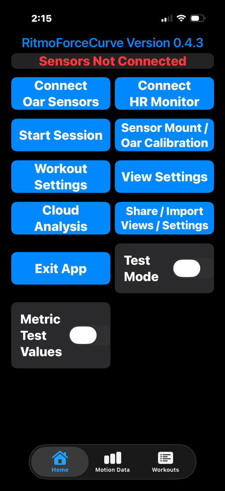
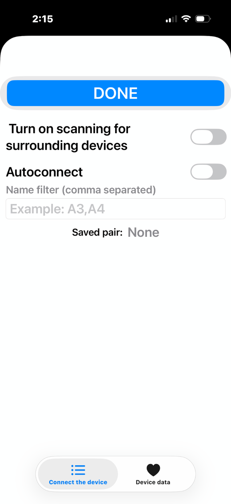
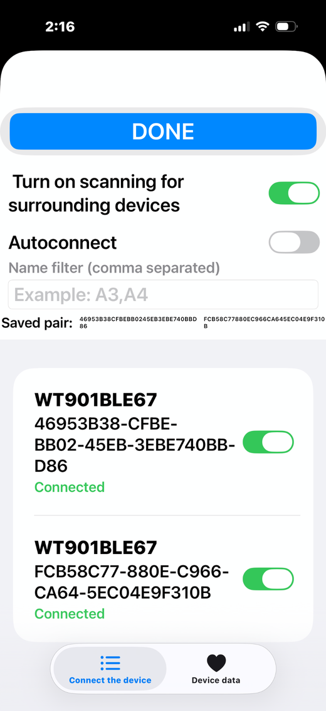
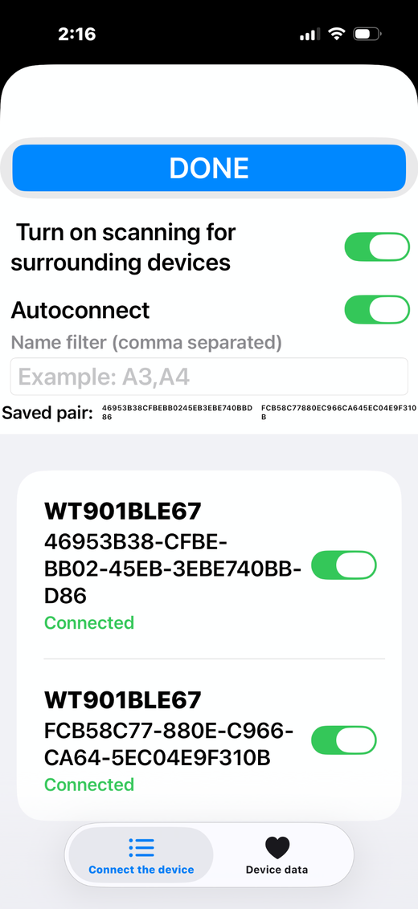
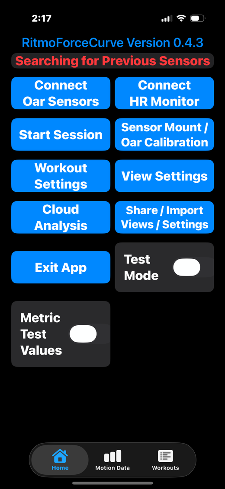
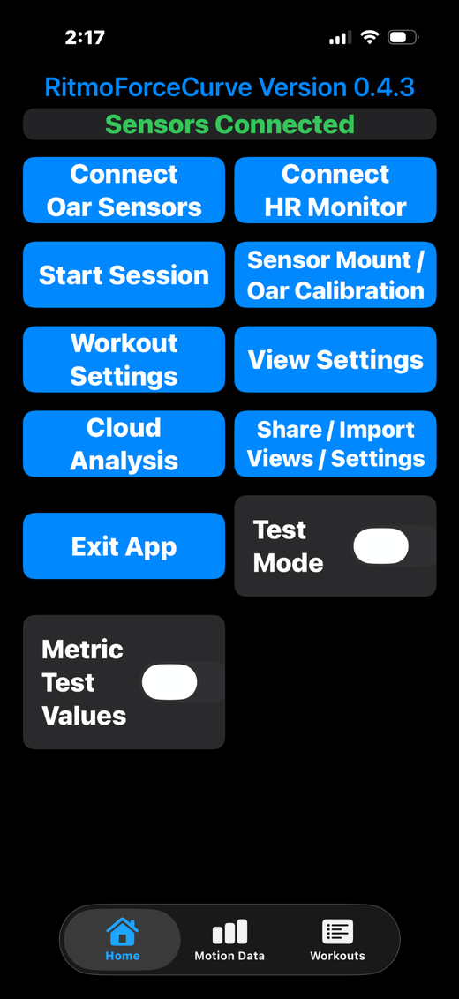

Use this page to connect the RitmoForceCurve iOS app to the two Bluetooth oar sensors before a row.
The safest routine is: power the sensors, connect them deliberately, turn on Autoconnect, then leave the Bluetooth menu.
Important before a busy dock or regatta:
in the iOS RitmoForceCurve app, you do not need to remember which Bluetooth name is the shaft sensor or sleeve sensor, and you usually do not need to write down sensor names or MAC/address endings.
The easiest way to avoid connecting to someone else’s sensors is to connect your two sensors at home, or away from other rowers, then turn Autoconnect on before pressing DONE.
After that, the app will look for that saved pair the next time those sensors are powered on.
What Autoconnect does: once your two sensors have been selected, turn Autoconnect on before pressing DONE.
Autoconnect is used both to connect only to sensors that were paired/saved earlier and to automatically reconnect the next time the app is opened with those sensors powered on.
Writing down sensor name/address endings is mainly useful for Android users using the WitMotion app, not for normal iOS RitmoForceCurve Autoconnect use.
Step 1
Start from the Home screen
Turn on both oar sensors before opening the Bluetooth connection screen.
Open RitmoForceCurve.
If the status says Sensors Not Connected, tap Connect Oar Sensors.
If the status says Searching for Previous Sensors for more than a few seconds, also tap Connect Oar Sensors and do a clean connection.
Do not start a rowing session until the Home screen says Sensors Connected.

Home screen before the oar sensors are connected.
Step 2
Use a clean start when pairing or when things seem confused
In the Bluetooth menu, start with Turn on scanning for surrounding devices turned off.
Start with Autoconnect turned off.
If any individual sensor switch is already on and you are not sure it is yours, turn it off before continuing.
This prevents the app from grabbing an old saved pair or a nearby sensor before you have confirmed the two sensors you want.

Clean start: scanning off, Autoconnect off.
Step 3
Turn scanning on and connect your two sensors
Turn on Turn on scanning for surrounding devices.
Wait for the two WT901BLE67 sensors to appear.
If possible, do this first setup at home or away from other sensors, so only your own two sensors are visible.
Turn on the switch for each of your two sensors.
Both sensors should show Connected.
The app just needs the correct two sensors. You do not have to decide which one is shaft or sleeve from the Bluetooth name.

Scanning on: select the two sensors that belong to your setup.
Step 4
Turn Autoconnect on before leaving the Bluetooth menu
After both sensors show Connected, turn Autoconnect on.
Then tap DONE.
Turning Autoconnect on at this point tells the app to save this pair. Next time, with these sensors powered on, the app will search for the saved pair instead of asking you to pick from every nearby Bluetooth sensor.

Before tapping DONE, turn Autoconnect on.
Next time
Normal launch after a saved pair exists
Turn on the two oar sensors first.
Open RitmoForceCurve.
The Home screen may say Searching for Previous Sensors while the app looks for the saved pair.
Wait a few seconds. If the sensors are on and nearby, the status should change to Sensors Connected.
If it keeps searching, tap Connect Oar Sensors and repeat the clean-start process above.

With Autoconnect enabled, this is normal while the app reconnects to the saved pair.
Ready
Confirm connection before rowing
Look for Sensors Connected on the Home screen.
Go to Sensor Mount / Oar Calibration if you need to check side, mount orientation, or calibration.
When everything looks correct, tap Start Session.

Green Sensors Connected means the app is ready to use the oar sensors.
Troubleshooting
Only one sensor appears: Turn scanning off and back on, move the phone closer, or power-cycle the missing sensor.
Wrong sensors are nearby: Move away from other sensors if possible, turn Autoconnect off, connect only your two sensors, then turn Autoconnect back on before DONE.
It keeps searching: Open Connect Oar Sensors, turn scanning and Autoconnect off, then reconnect both sensors and turn Autoconnect back on before DONE.
Another phone/app was connected: Close the other app or disconnect the sensors there, then scan again.